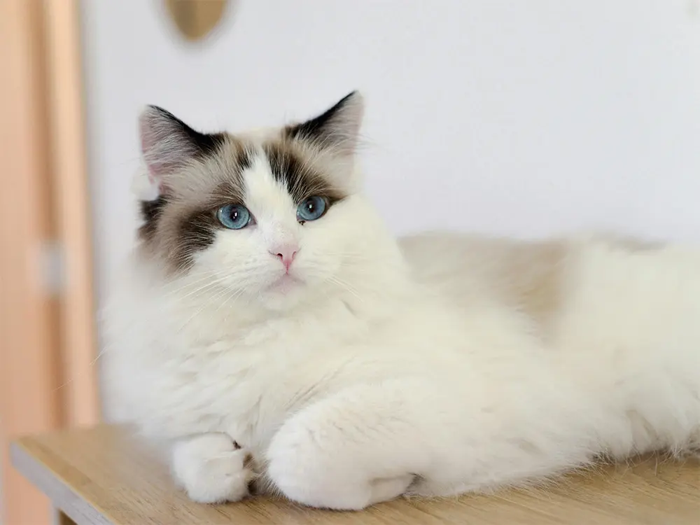

01 — The Challenge
Mr. Whiskers had plenty to say, but his meows didn't always get his ideas across. He needed a way to share his thoughts and personality with the humans around him.
FEATURED CLIENT CASE STUDY
Discover how Mr. Whiskers found his voice and transformed from an ordinary house cat into a confident corporate CEO. Explore his journey, the technology that gave him a human voice, and his experience learning to communicate his thoughts, share ideas, and lead the office.

Mr. Whiskers had plenty to say, but his meows didn't always get his ideas across. He needed a way to share his thoughts and personality with the humans around him.
With WoofToHello™, Mr. Whiskers was given a human voice that could express his thoughts, opinions, and big CEO energy.
Mr. Whiskers can now express his opinions, share his ideas, and let his humans know exactly what's on his mind. His voice brings his personality to life, one conversation at a time.